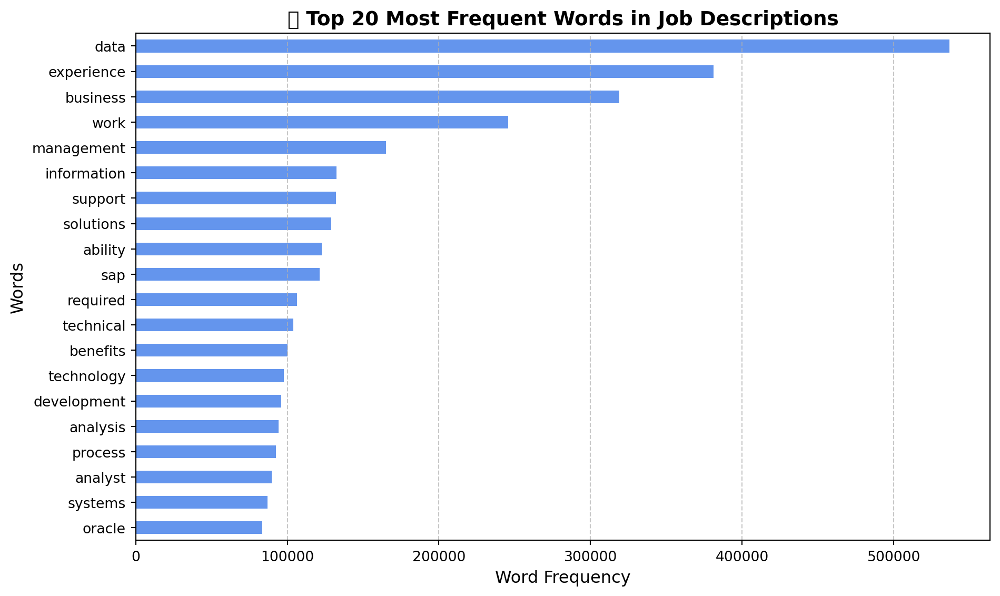
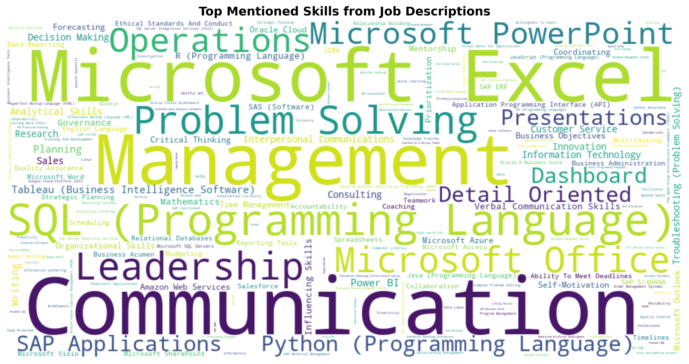
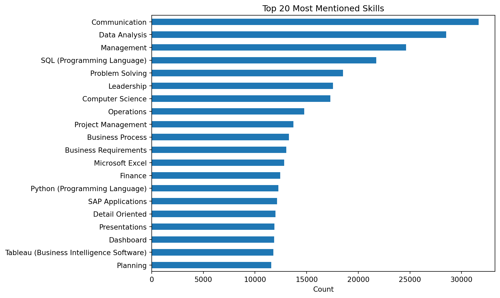
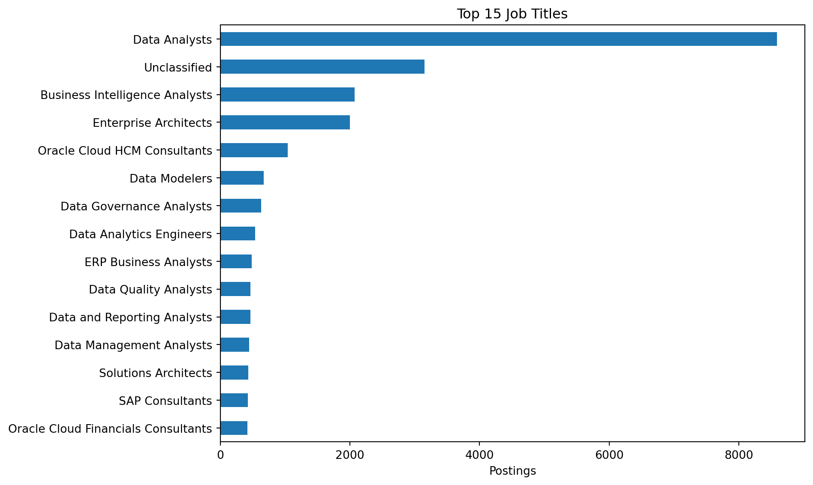
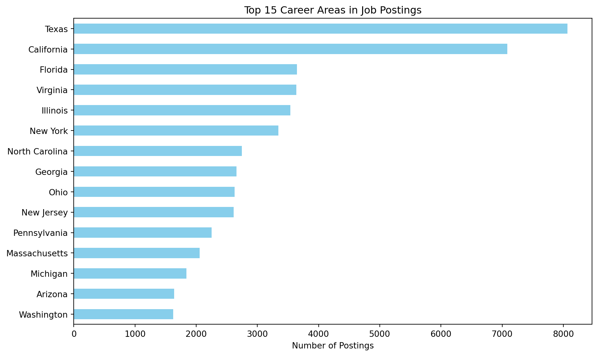

import pandas as pd
import missingno as msno
import matplotlib.pyplot as plt
import warnings
import numpy as np
import warnings
import plotly.express as px
from collections import Counter
import re
import plotly.io as pio
import plotly.graph_objects as go
from ipywidgets import Dropdown, VBox, OutputNLH METHOD
🧹 Extracting Insights from Job Descriptions Using NLP Methods
lightcast_data = pd.read_csv("lightcast_job_postings.csv")
columns_to_drop = [
"ID", "URL", "ACTIVE_URLS", "DUPLICATES", "LAST_UPDATED_TIMESTAMP",
"NAICS2", "NAICS3", "NAICS4", "NAICS5", "NAICS6",
"SOC_2", "SOC_3", "SOC_5"]
lightcast_data.drop(columns=columns_to_drop, inplace=True)/var/folders/1s/0kz43lv50zzcywvpxqbzqz380000gn/T/ipykernel_62422/2868506846.py:1: DtypeWarning:
Columns (19,30) have mixed types. Specify dtype option on import or set low_memory=False.
import nltk
from nltk.corpus import stopwords
import re
nltk.download('stopwords')
stop_words = set(stopwords.words('english'))
def clean_text(text):
if pd.isna(text):
return ""
text = re.sub(r'\W+', ' ', text)
words = text.lower().split()
return ' '.join([word for word in words if word not in stop_words])
lightcast_data['cleaned_body'] = lightcast_data['BODY'].apply(clean_text)[nltk_data] Downloading package stopwords to /Users/psy/nltk_data...
[nltk_data] Package stopwords is already up-to-date!custom_stopwords = set(stopwords.words('english')).union({
'job', 'position', 'requirements', 'including', 'us', 'may',
'role', 'description', 'status', 'new', 'full', 'provide',
'opportunity', 'related', 'strong', 'working', 'time', 'knowledge',
'degree', 'skills', 'team', 'years', 'status', 'employment'
})
def clean_text(text):
text = re.sub(r'\W+', ' ', str(text).lower())
words = [w for w in text.split() if w not in custom_stopwords]
return ' '.join(words)
lightcast_data['cleaned_body'] = lightcast_data['BODY'].apply(clean_text)from sklearn.feature_extraction.text import CountVectorizer
vectorizer = CountVectorizer(max_features=50)
X = vectorizer.fit_transform(lightcast_data['cleaned_body'])
word_counts = pd.DataFrame(X.toarray(), columns=vectorizer.get_feature_names_out())
top_words = word_counts.sum().sort_values(ascending=False)
print(top_words.head(10))data 536799
experience 381282
business 319096
work 245731
management 165051
information 132621
support 132049
solutions 128909
ability 122677
sap 121440
dtype: int64import matplotlib.pyplot as plt
# Plot top 20 words
plt.figure(figsize=(10, 6))
top_words.head(20).sort_values().plot(kind='barh', color='cornflowerblue')
plt.title('🔍 Top 20 Most Frequent Words in Job Descriptions', fontsize=14, weight='bold')
plt.xlabel('Word Frequency', fontsize=12)
plt.ylabel('Words', fontsize=12)
plt.xticks(fontsize=10)
plt.yticks(fontsize=10)
plt.grid(axis='x', linestyle='--', alpha=0.7)
plt.tight_layout()
plt.show()/var/folders/1s/0kz43lv50zzcywvpxqbzqz380000gn/T/ipykernel_62422/4139231888.py:14: UserWarning:
Glyph 128269 (\N{LEFT-POINTING MAGNIFYING GLASS}) missing from current font.
/Users/psy/Desktop/BU/2025_Spring/AD_688/Project/ad688-employability-sp25A1-group7.io/.venv/lib/python3.8/site-packages/IPython/core/pylabtools.py:152: UserWarning:
Glyph 128269 (\N{LEFT-POINTING MAGNIFYING GLASS}) missing from current font.

Wordcloud
from collections import Counter
import ast
# Combine all parsed skill lists into one flat list
def safe_parse(x):
try:
return ast.literal_eval(x) if isinstance(x, str) else []
except:
return []
lightcast_data['COMMON_SKILLS_NAME'] = lightcast_data['COMMON_SKILLS_NAME'].apply(safe_parse)
lightcast_data['SOFTWARE_SKILLS_NAME'] = lightcast_data['SOFTWARE_SKILLS_NAME'].apply(safe_parse)
all_skills = [
skill for sublist in lightcast_data['COMMON_SKILLS_NAME'] + lightcast_data['SOFTWARE_SKILLS_NAME']
for skill in sublist
]
# Count and visualize
from wordcloud import WordCloud
import matplotlib.pyplot as plt
skill_freq = Counter(all_skills)
wordcloud = WordCloud(width=1000, height=500, background_color='white', colormap='viridis')\
.generate_from_frequencies(skill_freq)
plt.figure(figsize=(12, 6))
plt.imshow(wordcloud, interpolation='bilinear')
plt.axis('off')
plt.title('Top Mentioned Skills from Job Descriptions', fontsize=14, weight='bold')
plt.tight_layout()
plt.show()
🧠 Top Job Skills Revealed by NLP
We used natural language processing (NLP) to analyze thousands of job descriptions and extract the most frequently mentioned skills.
Technical tools like
Excel,SQL,Python, andTableaustand outSoft skills such as
Communication,Leadership, andProblem Solvingare highly valuedMicrosoft Office,PowerPoint, andOperationsare frequently requestedBusiness intelligence tools like
Power BIandSAPappear consistently
This word cloud reveals the hybrid nature of modern roles—blending tech skills with business and communication strength.
import ast
def safe_parse_skills(x):
if isinstance(x, list): # Already a list
return x
elif isinstance(x, str):
try:
return ast.literal_eval(x)
except:
return []
else:
return []
lightcast_data['SKILLS_NAME'] = lightcast_data['SKILLS_NAME'].apply(safe_parse_skills)Visualize Top 20 Skills
from collections import Counter
import matplotlib.pyplot as plt
import pandas as pd
all_skills = [skill for sublist in lightcast_data['SKILLS_NAME'] for skill in sublist]
top_skills = pd.Series(Counter(all_skills)).sort_values(ascending=False).head(20)
top_skills.plot(kind='barh', figsize=(10, 6))
plt.title('Top 20 Most Mentioned Skills')
plt.xlabel('Count')
plt.gca().invert_yaxis()
plt.tight_layout()
plt.show()
🧠 Top Skills Uncovered with NLP
We analyzed thousands of job descriptions using Natural Language Processing (NLP).
Most mentioned skills include:
Communication
Data Analysis
SQL & Python
Leadership and Problem Solving
A mix of technical tools (like Excel, Tableau, and SAP) and soft skills shows what employers truly value.
These insights help job-seekers focus their learning and stay competitive in the evolving job market.
import ast
def safe_parse(x):
try:
return ast.literal_eval(x) if isinstance(x, str) else []
except:
return []
lightcast_data['COMMON_SKILLS_NAME'] = lightcast_data['COMMON_SKILLS_NAME'].apply(safe_parse)
lightcast_data['SOFTWARE_SKILLS_NAME'] = lightcast_data['SOFTWARE_SKILLS_NAME'].apply(safe_parse)from collections import Counter
import pandas as pd
# Combine both sets of skills into one counter
all_common = [skill for sublist in lightcast_data['COMMON_SKILLS_NAME'] for skill in sublist]
all_software = [skill for sublist in lightcast_data['SOFTWARE_SKILLS_NAME'] for skill in sublist]
common_counter = pd.Series(Counter(all_common)).sort_values(ascending=False).head(20)
software_counter = pd.Series(Counter(all_software)).sort_values(ascending=False).head(20)/var/folders/1s/0kz43lv50zzcywvpxqbzqz380000gn/T/ipykernel_62422/3101464156.py:8: FutureWarning:
The default dtype for empty Series will be 'object' instead of 'float64' in a future version. Specify a dtype explicitly to silence this warning.
/var/folders/1s/0kz43lv50zzcywvpxqbzqz380000gn/T/ipykernel_62422/3101464156.py:9: FutureWarning:
The default dtype for empty Series will be 'object' instead of 'float64' in a future version. Specify a dtype explicitly to silence this warning.
📊 Top Job Titles in Data & Analytics
This chart shows the most frequently posted job titles across our dataset.
top_titles = lightcast_data['TITLE_NAME'].value_counts().head(15)
top_titles.plot(kind='barh', figsize=(10, 6))
plt.title('Top 15 Job Titles')
plt.xlabel('Postings')
plt.gca().invert_yaxis()
plt.tight_layout()
plt.show()
Data Analysts dominate the landscape by a wide margin
Other popular roles include Business Intelligence Analysts, Enterprise Architects, and Data Engineers
Specialized titles like Oracle Consultants, ERP Analysts, and Solutions Architects highlight demand in cloud and enterprise systems
These results confirm that data-driven roles are central to today’s hiring trends—with opportunities spanning both technical and strategic domains.
📍 Where the Jobs Are: Top Hiring States
This bar chart highlights the top 15 U.S. states by number of job postings in our dataset.
top_areas = lightcast_data['STATE_NAME'].value_counts().head(15)
top_areas.plot(kind='barh', figsize=(10, 6), color='skyblue')
plt.title('Top 15 Career Areas in Job Postings')
plt.xlabel('Number of Postings')
plt.gca().invert_yaxis()
plt.tight_layout()
plt.show()
📍 Where the Jobs Are: Top Hiring States
This bar chart highlights the top 15 U.S. states by number of job postings in our dataset.
Texas and California lead the nation in job opportunities
Other strong markets include Florida, New York, Illinois, and Virginia
States like North Carolina, Massachusetts, and Georgia also show solid demand
For job-seekers, these locations represent high-activity hubs worth targeting—whether relocating or applying remotely.